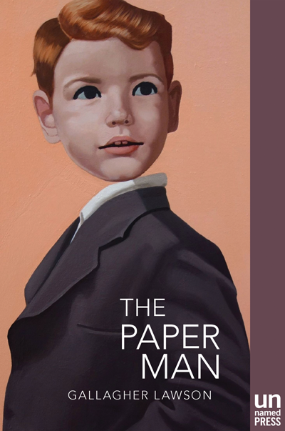

THE PAPER MAN
A young man made of paper. An anonymous, anarchic city.
One conflicted desire: to both fit in and stand out.
Escaping a stagnant, sheltered life, an unusual young man named Michael runs away to an equally unusual city by the sea, one that holds the promise of art, adventure, and acceptance. Trailed by the mysterious circumstances surrounding his transformation from “normal” boy to paper man, it is acceptance that Michael wants more than anything else. Soon, however, he discovers that the city is tearing at the seams. With rumors abounding of an invasion by the militarized Northern power, Michael has more to worry about than the unpredictable seaside weather turning him to pulp.
Everything changes when Michael plunges into a decadent underground art world that adopts him as its own creation. Who is Michael? What kind of person does Michael want to be? As the paper man struggles with an increasingly fragile grasp of his own identity, he is drawn to the city’s most notorious artist, David Doppelmann. With Doppelmann, Michael begins another dangerous transformation, one that will either lead to uncovering his true self, or destroy him and everyone he cares out.
Publishers Weekly
“Beautifully written and finely wrought, this novel is a surreal coming-of-age story that considers the boundaries between art and life….[A] strange and brilliant debut novel.”
Ploughshares
“Part Frankenstein, part Pinocchio, attracting comparisons to Kafka’s Metamorphosis… [The Paper Man] is a compelling story that sticks with the reader, examining art and its creation from a dizzying variety of angles and raising fascinating questions about ownership, celebrity, autonomy, the limits of self, and the essence of our humanity.”
Electric Literature
“Gallagher Lawson’s The Paper Man is a rare narrative, announcing the arrival of an outstanding new voice that comfortably inhabits the strange place where literary fiction, surrealism, and gritty fantasy converge.”
Shane Jones
author of Light Boxes and Crystal Eaters
“Gallagher Lawson belongs to the new wave of writers using fantastical elements to mine deeper into realist territory. A strong debut from a promising writer of agile talents.”
Mario Bellatin
author of Beauty Salon and Shiki Nagaoka: A Nose for Fiction
“Only in the purity of paper, in its essence of nothingness, is it possible to create a truly literary character.”
J. Robert Lennon
author of Familiar and See You In Paradise
“This bizarre, compelling debut combines the darkness and political intrigue of Kafka with the eerie hyperrealism of a Magritte painting. Michael, the Paper Man, is a highly unconventional and persuasive hero, and David Doppelman among the strangest—arch nemeses? father figures? manifestations of the self?—I’ve ever seen in a novel. Gallagher Lawson is a weird and wonderful writer.”
Samuel Sattin
author of League of Somebodies and the forthcoming The Silent End
“THE PAPER MAN is one of the most inspiring and original books I’ve read in years. Gallagher Lawson has written a lustrous fable comprised of loneliness, blood, and love. The Wizard of Oz on laudanum, a Bjork musical in letters, this devastatingly powerful debut challenges us to imagine what it would be like to be made of nothing more than paper, to live in a world where mermaids are murdered and art is the only path to actualization, a world, in many ways, not unlike our fragile own.”
The Rumpus
“In the book’s subtle allusiveness you can catch glimpses of the Wizard of Oz, Star Wars, David Lynch films, Miyazaki’s anime fairytales,The Velveteen Rabbit, Eyes Wide Shut, and Jose Saramago’s fables…Days after reading it, certain deeply weird scenes, erotic scenes and destructive scenes featuring paper, are still playing in my mind, still worming through my subconscious, like a waking dream…the book is a haunting debut, a children’s fable for adults that palpably captures what it might mean to hide behind a paper mask, and a social persona as well.”
Reviews and Interviews
Read the interview with Laura van den Berg at the LA Times.
Read the review from Publishers Weekly.
Read the review from Ploughshares.
Read the interview with Heather Scott Partington at Electric Literature.
Read the feature on The Paper Man and Unnamed Press at Brazos Bookstore in Houston.
Read the interview with The Last Bookstore.
Check out the playlist for the book at Large Hearted Boy's Book Notes series.
Read the review by Dwarf + Giant.
Read the review from The Rumpus.
Read the review from ZYZZYVA.
Read the review from Electric Literature.
Tumblr
Check out the book’s Tumblr page for themes, inspiration, atmosphere, and imagery.